燃脂效率比拼：9种运动一年的热量消耗分析
找到自己燃脂效率比较高的运动，然后在保障健康的情况下去多做这些运动，能逐步达到事半功倍的效果，反之可能是事倍功半。
考虑到个体差异：身高、体重、心率、灵活度、运动时长等因素各不一样，下面的一些个人数据也仅仅是能起到一点点的可供参考的作用，重点还是要去实践，自己去实践的才是真知。
运动手表：Apple Watch
身高体重：177cm、75kg
一、跑步
整体热量消耗 ≈ 12 大卡/分钟
3km（预计消耗 220 大卡）
① 所需时间：20 分钟左右 ② 热量消耗：220 大卡左右 ③ 完成难度： ⭐️
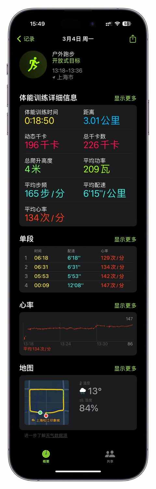
5km （预计消耗 380 大卡）
① 所需时间：30-45 分钟 ② 热量消耗：380 大卡左右 ③ 完成难度： ⭐️⭐️
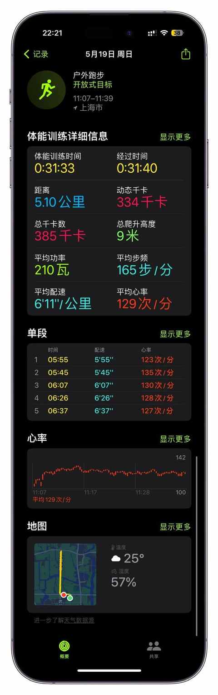
8km （预计消耗 590 大卡）
① 所需时间：45-60 分钟 ② 热量消耗：590 大卡左右 ③ 完成难度： ⭐️⭐️ ⭐️
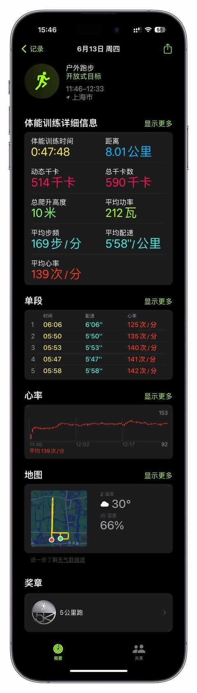
10km （预计消耗 730 大卡）
① 所需时间：55-80 分钟 ② 热量消耗：730 大卡左右 ③ 完成难度： ⭐️⭐️ ⭐️
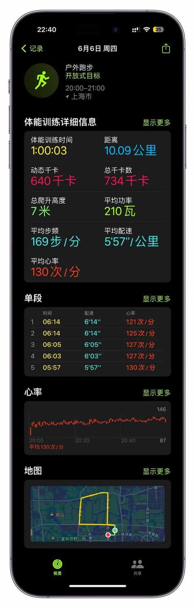
15km （预计消耗 1096 大卡）
① 所需时间：75-110 分钟 ② 热量消耗：1096 大卡左右 ③ 完成难度： ⭐️⭐️ ⭐️
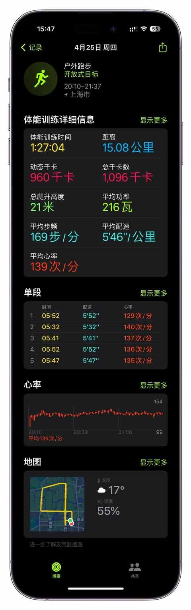
20km （预计消耗 1400 大卡）
① 所需时间：110-180 分钟 ② 热量消耗：1400 大卡左右 ③ 完成难度： ⭐️⭐️ ⭐️ ⭐️
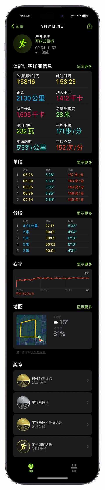
二、私教课
整体热量消耗 ≈ 4.5～ 8 大卡/分钟
下半身训练为主的课（预计消耗 400 大卡）
① 所需时间：60 分钟 ② 热量消耗：496 大卡左右 ③ 完成难度： ⭐️⭐️
上半身训练为主的课（预计消耗 278 大卡）
① 所需时间：60 分钟 ② 热量消耗：270 大卡左右 ③ 完成难度： ⭐️⭐️
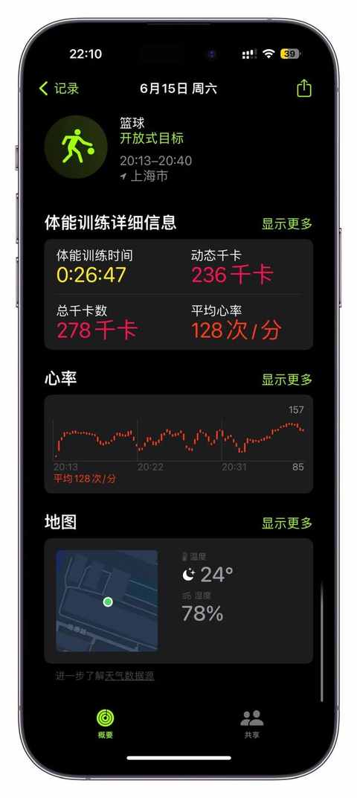
三、户外单车
整体热量消耗 ≈ 7～10 大卡/分钟
3km（预计消耗 70 大卡）
① 所需时间：10 分钟左右 ② 热量消耗：70 大卡左右 ③ 完成难度： ⭐️
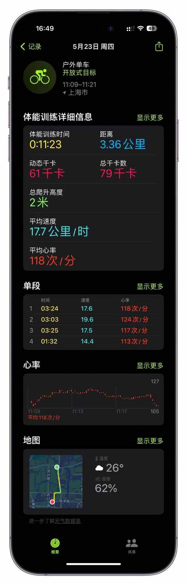
10km（预计消耗 290 大卡）
① 所需时间：30 分钟左右 ② 热量消耗：290 大卡左右 ③ 完成难度： ⭐️
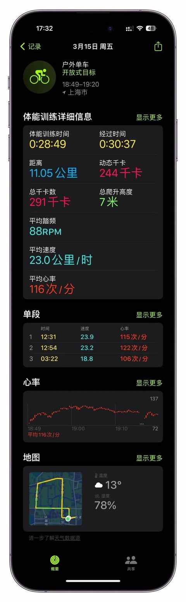
15km（预计消耗 450 大卡）
① 所需时间：40 分钟左右 ② 热量消耗：450 大卡左右 ③ 完成难度： ⭐️
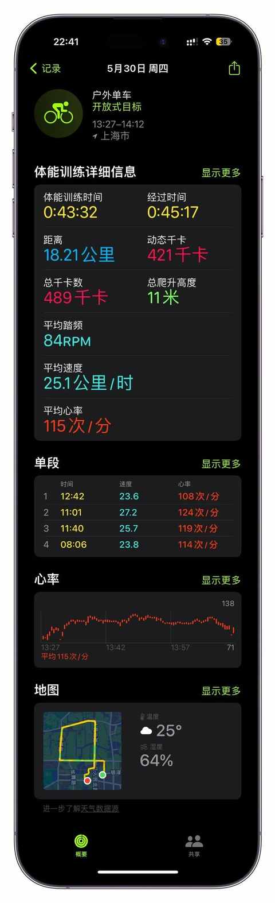
30km（预计消耗 920 大卡）
① 所需时间：80 分钟左右 ② 热量消耗：920 大卡左右 ③ 完成难度： ⭐️ ⭐️
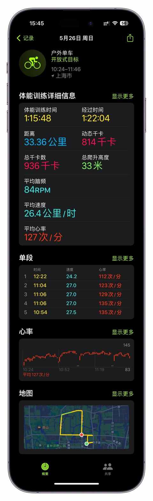
四、跳绳
整体热量消耗 ≈ 11～13 大卡/分钟
10分钟（预计消耗 140 大卡）
① 所需时间：10 分钟左右 ② 热量消耗：140 大卡左右 ③ 完成难度： ⭐️
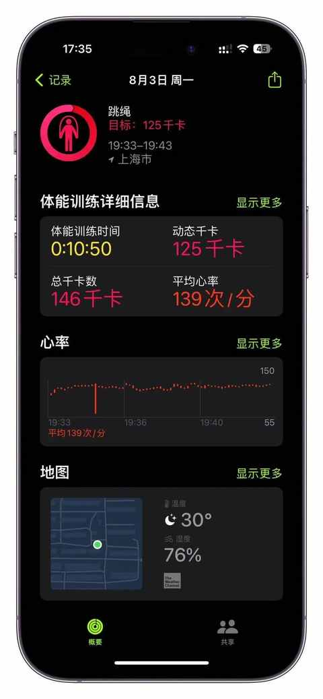
30分钟（预计消耗 320 大卡）
① 所需时间：30 分钟左右 ② 热量消耗：320 大卡左右 ③ 完成难度： ⭐️
60分钟（预计消耗 600 大卡）
① 所需时间：60 分钟左右 ② 热量消耗：600 大卡左右 ③ 完成难度： ⭐️ ⭐️
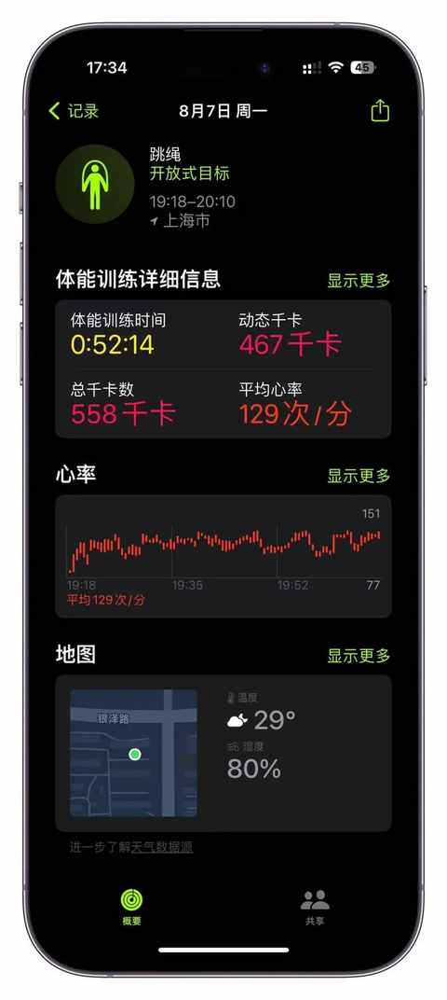
五、 HIIT（高强度间歇）
整体热量消耗 ≈ 8～10 大卡/分钟
10分钟（预计消耗 80 大卡）
① 所需时间：10 分钟左右 ② 热量消耗：80 大卡左右 ③ 完成难度： ⭐️
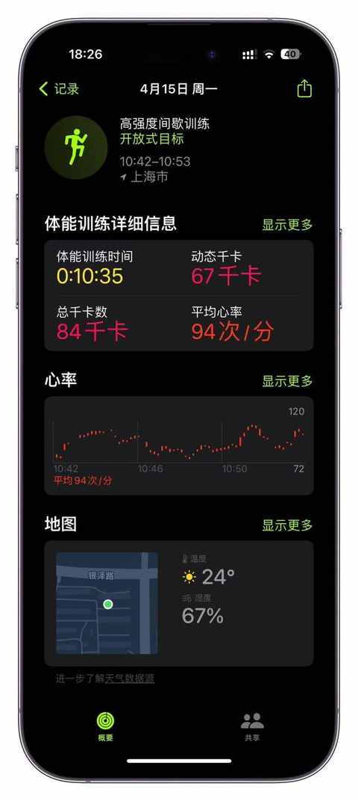
20分钟（预计消耗 200 大卡）
① 所需时间：20 分钟左右 ② 热量消耗：200 大卡左右 ③ 完成难度： ⭐️ ⭐️
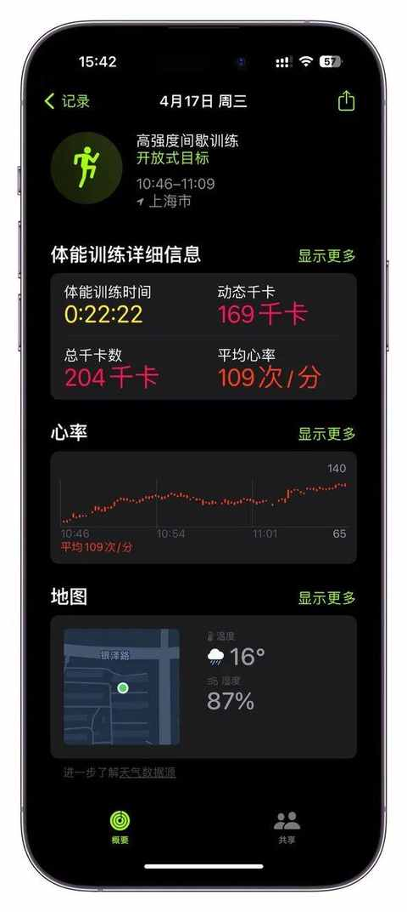
30分钟（预计消耗 310 大卡）
① 所需时间：30 分钟左右 ② 热量消耗：310 大卡左右 ③ 完成难度： ⭐️ ⭐️
六、 其他运动
游泳
整体热量消耗 ≈ 6.5 大卡/分钟
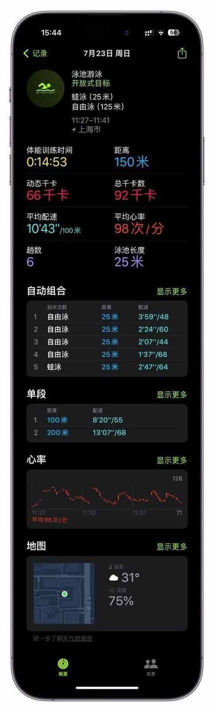
户外步行
整体热量消耗 ≈ 6 大卡/分钟
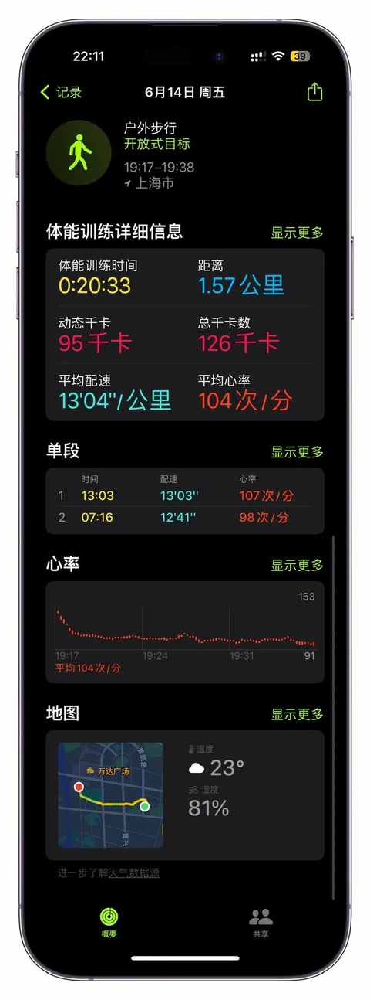
爬楼梯
整体热量消耗 ≈ 10 大卡/分钟
篮球
整体热量消耗 ≈ 10 大卡/分钟
通过个人一年多的运动实践，跑步可能对于当下的我来说，燃脂效率是最优的，不过随着运动表现的提升，可能骑行的燃脂效率也会有所提升。
综合来说，具体哪一项运动更适合你，得靠不断去实践，反复是错之后才可以，在进行尝试之前，一定查看下不同运动的注意事项，最大程度规避受伤风险。
一年多的坚持下来，我这边会更愿意去做的运动是：跑步、骑行、 爬楼梯、私教课 、篮球。
前面三项都是可以独立完成，跑步和骑行会挑天气，爬楼梯和篮球不受天气限制， 接下来也会 再继续尝试其他类型的运动，找到兼具燃脂效率和趣味性的运动。